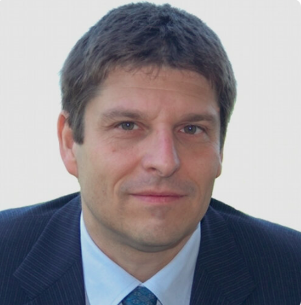
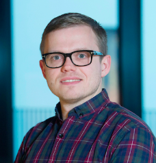

Recent advances in multimodal learning have accelerated the transition from text-based systems to speech-enabled interfaces. This rapid adoption has outpaced our understanding of limitations, biases, and societal consequences of speech-based large language models (LLMs).
IMPACT-SPEECH brings together researchers from speech processing, NLP, machine learning, social sciences, and ethics to systematically characterize, analyze, and mitigate bias in speech LLMs, with particular attention to real-world impacts.

Senior Researcher
Fondazione Bruno Kessler

Associate Professor
Aalborg University
We invite both archival and non-archival submissions related to bias in speech-based and multimodal LLMs.
Only archival submissions will be included in the official workshop proceedings.
Submissions will be accepted via:
Duration of the workshop: 1 day